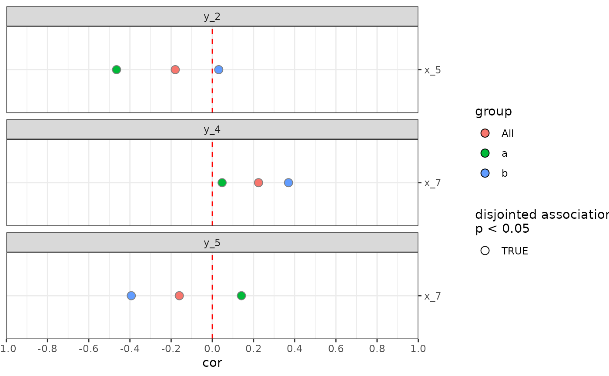
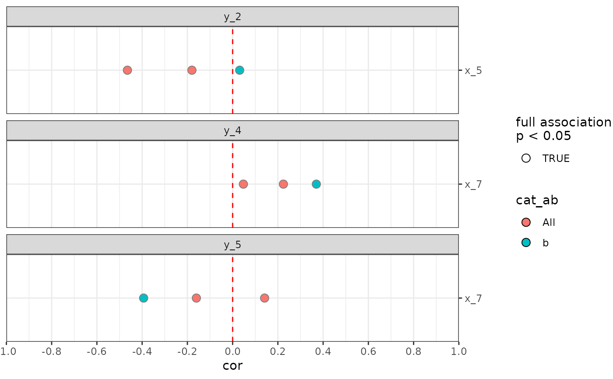

miaViz style plotting wrapper for anansi output
Source:R/AllGenerics.R, R/plotAnansi-methods.R
plotAnansi.RdplotAnansi generates a standard dissociation plot from the output of
getAnansi in the table format. It provides a convenient way to
visually assess relevant results from the anansi analysis.
Usage
plotAnansi(x, ...)
plotAnansi(x, ...)
# S4 method for class 'data.frame'
plotAnansi(
x,
association.type = NULL,
model.var = NULL,
signif.threshold = NULL,
colour_by = NULL,
color_by = colour_by,
fill_by = NULL,
size_by = NULL,
shape_by = NULL,
y_position = "right",
x_lab = "cor",
y_lab = ""
)Arguments
- x
a
data.frameobject output ofgetAnansiin the table format.- ...
additional arguments
- association.type
Character scalar. Specifies the type of association to show in the plot. One of"disjointed","emergent"and"full". (Default:NULL)- model.var
Character scalar. Specifies the name of a variable in the anansi model. It is relevant only whenassociation.typeis"disjointed"or"emergent". (Default:NULL)- signif.threshold
Numeric scalar. Specifies the threshold to mark the significance ofassociation.type. (Default:NULL)- colour_by
Character scalar. Specifies one of thegroupsterms used in the originalanansicall,xby which points should be coloured. (Default:NULL)- color_by
Character scalar. Alias tocolour_by.- fill_by
Character scalar. Specifies one of thegroupsterms used in the originalanansicall,xby which points should be filled (Default:NULL)- size_by
Character scalar. Specifies one of thegroupsterms used in the originalanansicall,xby which points should be sized. (Default:NULL)- shape_by
Character scalar. Specifies one of thegroupsterms used in the originalanansicall,xby which points should be shaped. (Default:NULL)- y_position
Character scalar. Specifies the position of the y labels. It should be either"left"or"right". (Default:"right")- x_lab
Character scalar. Specifies the label of the x axis. (Default:"cor")- y_lab
Character scalar. Specifies the label of the y axis. (Default:"")
Details
plotAnansi provides a standardised method to visualise the results
of anansi by means of a differential association plot. The input for this
function should be generated from getAnansi or
anansi, with return.format = "table"
Examples
# Import libraries
library(mia)
library(TreeSummarizedExperiment)
library(MultiAssayExperiment)
# Load data
data("FMT_data", package = "anansi")
# Convert to (Tree)SummarizedExperiment objects
metab_se <- SummarizedExperiment(assays = SimpleList(conc = as.matrix(FMT_metab)))
KO_tse <- TreeSummarizedExperiment(assays = SimpleList(counts = as.matrix(FMT_KOs)))
# Select functions that are represented in the dictionary
keep <- row.names(KO_tse) %in% sort(unique(ec2ko$ko))
KO_tse <- KO_tse[keep, ]
# Remove features with less than 10% prevalence
KO_tse <- subsetByPrevalent(KO_tse,
assay.type = "counts",
prevalence = 0.1
)
# Perform a centered log-ratio transformation on the functional counts assay
KO_tse <- transformAssay(KO_tse,
assay.type = "counts",
method = "clr",
pseudocount = TRUE
)
#> A pseudocount of 0.125 was applied.
# Prepare colData
coldata <- FMT_metadata
rownames(coldata) <- coldata$Sample_ID
coldata <- coldata[match(colnames(KO_tse), rownames(coldata)), ]
# Combine experiments into MultiAssayExperiment object
mae <- MultiAssayExperiment(
experiments = ExperimentList(cpd = metab_se, ko = KO_tse),
colData = coldata
)
# Perform anansi analysis
out <- getAnansi(mae,
experimentY = "cpd", experimentX = "ko",
assay.typeY = "conc", assay.typeX = "clr",
formula = ~Legend)
#> Fitting least-squares for following model:
#> ~ x + Legend + x:Legend
#> Running correlations for the following groups:
#> Aged yFMT, Aged oFMT, Young yFMT
# Select significant interactions
out <- out[out$full_p.values < 0.05, ]
# Visualise disjointed associations filled by group
plotAnansi(out,
association.type = "disjointed",
model.var = "Legend",
signif.threshold = 0.05,
fill_by = "group")

# Visualise full associations filled by Legend
plotAnansi(out,
association.type = "full",
signif.threshold = 0.05,
fill_by = "Legend")
